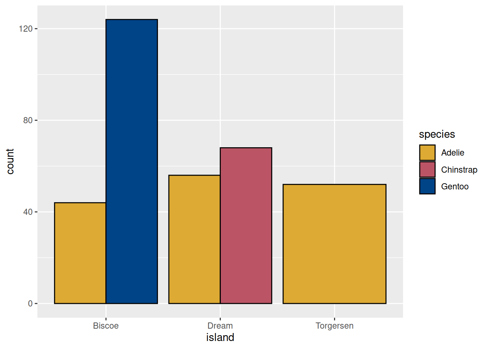

Associated Material
Zoom notes: Zoom Notes 04 - Summarising
data
Readings
Introduction
We do scientific research to test hypotheses, answer questions, or
just learn something about the world. After the often labourious process
of data collection, we may have hundreds (or even thousands) of data
points, but we haven’t actually learned anything. To squeeze the
knowledge out of our raw data, we must use statistics.
The formal topic of statistics is large and complex, and we do not
attempt to teach it here (there are papers for that, and we recommend
you take as many of them as possible). We concentrate on how to use R to
perform common statistical analyses. R is especially useful for such
tasks because of its extensive set of statistical libraries and
efficient data handling facilities.
There are two general types of statistical analyses – descriptive
statistics, which allow us to summarise and describe our raw data, and
inferential statistics, which allow us to generalise our results beyond
our observed data. We will discuss descriptive statistics in this module
and inferential techniques in Module 06.
For this module, we will use two data sets – the Palmers Penguins
data we saw earlier in the Data Visualisation module, and a data set
containing Chlorophyll A (ChlA) readings from three New Zealand lakes
(data provided by the local Regional Councils). ChlA levels are an
indicator of phytoplankton biomass, and provide a general measure of
lake health – more ChlA indicates poorer health. The “toxic algal
blooms” that occur occasionally in New Zealand lakes are accompanied by
a dramatic spike in measured ChlA.
Loading the data
# Install palmerpenguins once on any computer
# install.packages("palmerspenguins")
# After loading the library, a tibble
# called 'penguins' will be initialised
library(palmerpenguins)
# Check the structure
penguins
#> # A tibble: 344 × 8
#> species island bill_length_mm bill_depth_mm flipper_length_mm body_mass_g
#> <fct> <fct> <dbl> <dbl> <int> <int>
#> 1 Adelie Torgersen 39.1 18.7 181 3750
#> 2 Adelie Torgersen 39.5 17.4 186 3800
#> 3 Adelie Torgersen 40.3 18 195 3250
#> 4 Adelie Torgersen NA NA NA NA
#> 5 Adelie Torgersen 36.7 19.3 193 3450
#> 6 Adelie Torgersen 39.3 20.6 190 3650
#> 7 Adelie Torgersen 38.9 17.8 181 3625
#> 8 Adelie Torgersen 39.2 19.6 195 4675
#> 9 Adelie Torgersen 34.1 18.1 193 3475
#> 10 Adelie Torgersen 42 20.2 190 4250
#> # … with 334 more rows, and 2 more variables: sex <fct>, year <int>
# Read in the lakes data file, parsing the lake
# name column as a factor
lakes <- read.csv("data/NZ_lake_chla_data.csv", stringsAsFactors = TRUE)
# Since they are conceptually categorical in this data set,
# you may wish to cast Year and Month to factors as well, for completeness...
lakes$Year <- as.factor(lakes$Year)
lakes$Month <- as.factor(lakes$Month)
# Check the structure
str(lakes)
#> 'data.frame': 408 obs. of 4 variables:
#> $ LakeName: Factor w/ 3 levels "Lake Ellesmere",..: 1 1 1 1 1 1 1 1 1 1 ...
#> $ Year : Factor w/ 13 levels "2001","2002",..: 4 4 4 4 4 4 4 4 4 4 ...
#> $ Month : Factor w/ 12 levels "1","2","3","4",..: 1 2 3 4 5 6 7 8 9 10 ...
#> $ ChlA : num 66.9 79.9 95 82.4 59.6 69 62.1 96.3 135 102 ...
Visualise the data
When faced with a new data set, my first step is invariably to start
making graphs. These “pictures” of your data provide an easy way to see
large-scale patterns that will help guide your further analysis. They
also help you to catch any problems in your data (see the skewness
exercise below) that must be addressed before proceeding to more complex
analyses.
An excellent first graph for continuous (i.e. not categorical) data
is the frequency distribution, or
histogram, which has data value on the x-axis and
frequency (i.e. count or proportion) on the y-axis. This shows you, in a
single picture, how your data are distributed.
The penguins data set contains values for 344 different
penguins. We begin by looking at how the penguins’ body weights are
distributed.
# With base R
# The 'breaks' argument controls the number of bars drawn
hist(penguins$body_mass_g,
breaks = 100,
main="Distribution of Penguin Body Mass", xlab = "Body mass (g)", ylab = "Frequency")

# With ggplot
# Load the library before your first call to ggplot
library(ggplot2)
# The values provided to 'colour' and 'fill' are hexidecimal colour codes. Note the
# hash mark prefix. It is required.
# The 'labs' layer controls graph title and axis labels
ggplot(data = penguins) +
geom_histogram(aes(x = body_mass_g), colour = "#2222EE", fill="#eeeeff") +
labs(title = "Distribution of Penguin Body Mass", x = "Body Mass (g)", y = "Frequency")

Exercise 1
Using ggplot, make a histogram of all the ChlA values in data frame
lakes, with each lake in a different colour, as shown. If you need help,
review Module 3, or see my solution at the end of this handout. What
does this simple graph tell you about the health of these three
lakes?

Distribution graphs for categorical data
The functions hist and geom_histogram are
appropriate for continuous (numerical) data. For
categorical variables (e.g. Species and Island in the
penguin data set) it is usually better to make a bar graph. The example
code below shows how to generate a bar graph in ggplot (cf. Module 03).
Note how we modify the default ggplot colour palette to something more
accessible to viewers with atypical colour vision:
# "Colour-blind friendly" palette from #https://personal.sron.nl/~pault/
# These are hexadecimal colour codes. The # is required.
customPalette <- c("#DDAA33", "#BB5566", "#004488")
# Generate a stacked bar plot, and use our custom colour palette
ggplot(data = penguins) +
geom_bar(aes(x = island, fill=species), position = "stack") +
scale_fill_manual(values = customPalette)

Even a simple graph like this helps you to get to know your data.
Just by inspection we see that Biscoe island has the largest population,
Torgersen has only Adelie penguins, Dream Island has nearly equal
numbers of Chinstrap and Gentoo, etc. When first approaching a big data
set, always think about starting with some graphs.
Exercise 2
The bar graph above is in “stacked” format. Some people prefer bar
graphs to have separate bars for each group, as shown below. Write the
code needed to generate this graph. Hint: This requires changing only
the value of one argument in the code above. See Module 03 for more
revision as needed.

Measures of Central Tendency
Look at the graph you made earlier showing the distributions of ChlA
for the three lakes. You might describe the Lake Ellesmere ChlA readings
as “mostly below 100” and the Lake Rotorua readings as “mostly between
10 and 20”. Statements like this are attempts to describe a
typical score from a large data set. They allow us to
capture the fact that, for example, overall, Lake Ellesmere has
higher ChlA readings than Lake Rotorua It is not the case that
every Ellesmere reading is higher than every Rotorua
reading, but typically this is the case.
In statistics, a precise measure of such typicality is called a
Measure of Central Tendency (MCT). The most common MCTs
are the mean, the median and the
mode. These are, respectively, the mathematical
average, the middle score, and the most frequent score (or scores) in a
data set. There are some subtle statistical issues around which of the
three MCT is appropriate for any given data analysis situation (ask your
lecturer for details), but they are all easy to compute in R (we have,
in fact, already met function mean in earlier modules), and
we show example code below for computing these descriptive statistics on
a single column of data from the penguins data set.
Note that the penguins data has some missing some values (cf. Module
01 - Tidy Data), The functions for mean and median will not work if the
input data have any NA (missing) values. The most common
solution is to omit those scores from the computation by setting the
na.rm argument to TRUE as shown:
# Mean
# We have seen this code before... We pass the column of interest
# to function mean
mean(penguins$body_mass_g, na.rm=TRUE)
#> [1] 4201.754
# Median
# The familiar pattern....
median(penguins$body_mass_g, na.rm = TRUE)
#> [1] 4050
# Mode
# Base R has no built-in function for mode. After Module 08
# you will be able to write your own Mode function. Or you can
# use one of several available in auxiliary libraries. The
# DescTools library is a good one.
# Install the package once on each machine
# install.packages("DescTools")
# Load the library once each session
library(DescTools)
#Call the function
Mode(penguins$body_mass_g, na.rm=TRUE)
#> [1] 3800
#> attr(,"freq")
#> [1] 12
Note that DescTools::Mode returns the modal (i.e. most common value)
with an attached attribute called “freq” equal to the
number of occurences.
Using function summary
When you have a very large number of data measures, you may wish to
compute MCTs for individual columns as shown above. An efficient
alternative for smaller data sets is to use function
summary, which accepts a data frame and summarises
all its columns at once. Function summary computes
frequencies for categorical variables, and measures of central tendency
for continuous variables. It also reports the numbers of NA values in
each column. Function summary provides some additional
measures (minimum, 1st quartile, 3rd quartile, and maximum) that we will
discuss in more detail later.
summary(penguins)
#> species island bill_length_mm bill_depth_mm
#> Adelie :152 Biscoe :168 Min. :32.10 Min. :13.10
#> Chinstrap: 68 Dream :124 1st Qu.:39.23 1st Qu.:15.60
#> Gentoo :124 Torgersen: 52 Median :44.45 Median :17.30
#> Mean :43.92 Mean :17.15
#> 3rd Qu.:48.50 3rd Qu.:18.70
#> Max. :59.60 Max. :21.50
#> NA's :2 NA's :2
#> flipper_length_mm body_mass_g sex year
#> Min. :172.0 Min. :2700 female:165 Min. :2007
#> 1st Qu.:190.0 1st Qu.:3550 male :168 1st Qu.:2007
#> Median :197.0 Median :4050 NA's : 11 Median :2008
#> Mean :200.9 Mean :4202 Mean :2008
#> 3rd Qu.:213.0 3rd Qu.:4750 3rd Qu.:2009
#> Max. :231.0 Max. :6300 Max. :2009
#> NA's :2 NA's :2
Exercise 3
The results for column year may not be what you
expected. Function summary has computed an average
value for year. Does this seem like the appropriate
analysis? (Answer => No.) Modify penguins to make
summary treat the year data correctly, and
rerun summary.
Measures of Variability
In the histograms for ChlA from each of three New Zealand lakes, the
three groups of scores did not overlap completely, indicating that the
typical values – the central tendencies – were different for the three
lakes. We can confirm this observation by comparing the means. We can
use function aggregate or group_by and
summarise from package dplyr (cf. Module
03).
# Using aggregate. compute the group means
aggregate(lakes$ChlA, by = list(Lake = lakes$LakeName), FUN=mean)
#> Lake x
#> 1 Lake Ellesmere 80.566667
#> 2 Lake Rotorua 18.419015
#> 3 Lake Taupo 1.030606
# Using dplyr -- install tidyverse first if needed
library(dplyr)
by_lake <- group_by(lakes, LakeName)
summarise(by_lake, Mean_ChlA = mean(ChlA))
#> # A tibble: 3 × 2
#> LakeName Mean_ChlA
#> <fct> <dbl>
#> 1 Lake Ellesmere 80.6
#> 2 Lake Rotorua 18.4
#> 3 Lake Taupo 1.03
However, not only do the central points of the three lakes’
distributions differ, so do the amounts of “spread”. Lake Taupo’s
distribution is very “skinny”; all its readings are similar. Lake
Ellesmere is squashed and spread out; its readings vary a lot. Lake
Rotorua is intermediate. To illustrate this more clearly, we can use
ggplot to make separate graphs for each lake, adjusting the y-axes to
make comparison easier (note the arguments to
facet_grid).
ggplot(data = lakes) +
geom_histogram(aes(x = ChlA, fill=LakeName), color="black") +
facet_grid(rows = vars(LakeName), scales="free_y")

Statistically, the “spread out” quality of a distribution reflects
its variability.
We can capture variability more precisely with measures of the
range of the data set. These are typically the smallest
and largest scores (minimum and maximum) and the scores at the 25th and
75th percentiles (also called 1st quartile and
3rd quartile). Earlier, we saw that function
summary computes these measures of range. However, if we
simply pass the entire lakes data frame to function
summary, it will combine the data from all three lakes – to
compare the lakes we need the values from each lake separately.
In Module 02 we saw that we could solve this problem by using
function subset to select out just the rows from one lake,
and passing those rows to summary. However, we can achieve
the same result more parsimoniously by using function
aggregate. Above we used aggregate with
FUN = mean to get the mean ChlA for each lake. We can use
FUN = summary to call function summary
separately for the records of each lake. (The same result can be
achieved with group_by and summarise.)
aggregate(lakes$ChlA, by = list(Lake = lakes$LakeName), FUN=summary)
#> Lake x.Min. x.1st Qu. x.Median x.Mean x.3rd Qu.
#> 1 Lake Ellesmere 1.300000 44.000000 67.950000 80.566667 97.087500
#> 2 Lake Rotorua 2.500000 10.825000 15.950000 18.419015 23.625000
#> 3 Lake Taupo 0.200000 0.600000 0.900000 1.030606 1.400000
#> x.Max.
#> 1 521.300000
#> 2 77.100000
#> 3 2.900000
We can also measure the variablity in a data set with the
standard deviation. The standard deviation is the most
commonly used measure of variability, and it plays an important
mathematical role in inferential statistics (ask your stats lecturer for
details – it’s very interesting). Conceptually, the standard deviation
is almost equal to the average distance from the mean across
all the values in a data set – it doesn’t equal exactly that
value, because of how it is computed, but it is close, and it can be
helpful to think of it with this approximation. Big standard deviation
shows that scores are spread far from their mean; small standard
deviation shows that scores tend to huddle close to their mean. Compute
standard deviation with function sd.
# Remember you can save having to type the data frame
# name by using attach
attach(lakes)
aggregate(ChlA, by = list(Lake = LakeName), FUN=sd)
#> Lake x
#> 1 Lake Ellesmere 63.5217194
#> 2 Lake Rotorua 11.6637583
#> 3 Lake Taupo 0.5627233
# More processing of data frame lakes could go here........
# But remember to detach when you're finished...
detach(lakes)
The histograms, the measures of range, and the standard deviations
all indicate that Taupo has very stable ChlA measures, Rotorua is a
little noisier, and Ellesmere is all over the place. This phytoplankton
biomass stability is an important indicator of lake health – a stable
lake is at much lower risk of a toxic algal bloom.
Efficient code for descriptive statistics
The function describeBy in package psych
will compute all the descriptive summaries we have seen (and a few more)
in one statement. When you are exploring a single data column and a
single grouping column (so the output doesn’t get too large), this is a
very useful function.
# Install once on any computer
#install.packages("psych")
# Call once each R session
library(psych)
#>
#> Attaching package: 'psych'
#> The following objects are masked from 'package:DescTools':
#>
#> AUC, ICC, SD
#> The following objects are masked from 'package:ggplot2':
#>
#> %+%, alpha
# Pass in the data column and the grouping column
describeBy(lakes$ChlA, lakes$LakeName)
#>
#> Descriptive statistics by group
#> group: Lake Ellesmere
#> vars n mean sd median trimmed mad min max range skew kurtosis se
#> X1 1 120 80.57 63.52 67.95 72.45 40.7 1.3 521.3 520 3.12 17.5 5.8
#> ------------------------------------------------------------
#> group: Lake Rotorua
#> vars n mean sd median trimmed mad min max range skew kurtosis se
#> X1 1 132 18.42 11.66 15.95 16.97 9.12 2.5 77.1 74.6 1.71 4.75 1.02
#> ------------------------------------------------------------
#> group: Lake Taupo
#> vars n mean sd median trimmed mad min max range skew kurtosis se
#> X1 1 156 1.03 0.56 0.9 0.97 0.56 0.2 2.9 2.7 0.97 0.5 0.05
Package psych contains many other interesting
statistical tools, especially for multivariate data sets commonly found
in psychological and ecological research. Ask Google or your lecturer
for details.
Exploring the relationship between two variables
The preceding descriptive statistics all looked at data measures –
ChlA, bill length, body weight, etc. – individually, summarising their
distribution, central tendency and variability. Often, however, we are
interested in describing the relationship between data
measures. For example, we might want to know if heavier
penguins also tend to have longer bills. This type of relationship is
called a correlation. When we have more than one
measure for each experimental participant (or each penguin, or each
lake) we can explore correlations between pairs of measures graphically
with a scatterplot. A scatterplot has one measure on
each axis, and one point for each participant’s pair of scores.
In the code example below we make a scatterplot with ggplot
(cf. Module 03), and show how to add a linear trend
line. Conceptually, this is the line that runs through the
center of the scatterplot points, and it helps us to see the direction
of the relationship. Mathematically, trend lines are actually very
complicated things, and we generate them with the powerful function
lm,(for linear model). You will learn
about the many fascinating things you can do with linear modeling if you
take advanced statistics papers.
# geom_point plots the points of the scatterplot
# geom_smooth plots the linear trend line computed with function lm
# The se argument determines whether error bars are shown
# around the trend line.
ggplot(data = penguins, mapping = aes(x = body_mass_g, y = bill_length_mm)) +
geom_point() +
geom_smooth(method = "lm", se=FALSE)
The scatterplot gives us a very clear picture: those penguins with
higher body weights tend to also have longer bills, and this is
reflected in the positive slope of the trendline. Note however that this
is not an absolute rule. Is it easy to find pairs of points such that
the lighter of two penguins has the longer bill. This is typical of
correlational data.
There are various statistical measures that capture the strength of a
correlation (i.e. how close it is to being an absolute rule). For
continuous, numerical data (such as bill length and body weight) use the
R function cor to compute the numerical correlation value.
As with means and medians, we must tell cor how to cope
with missing data (NA scores). Unfortunately the syntax is not
consistent across the functions. For function mean we set
argument na.rm = TRUE. For function cor we
must set argument use = "complete.obs", meaning that we
want the function to use only those rows that are complete (i.e. have
both values). These idiosyncracies occur from time to time in R; you
just have to learn them.
# Pass the two data columns into function cor
cor(penguins$bill_length_mm, penguins$body_mass_g, use="complete.obs")
#> [1] 0.5951098
Function cor returns a value between -1 and 1.
Correlations that trend downward (i.e. if one score is high, the other
tends to be low) will have a negative correlation value. Correlations
that trend upward (i.e. if one score is high the other also tends to be
high) will have a positive correlation value. The closer the absolute
value of cor is to 1, the stronger the correlation (you
know who to talk to for more detail, don’t you?).
For example, consider these two scatterplots:

Exercise 4
For one of the scatterplots above, the computed correlation score is
0.60. For the other, it is 0.87. First, predict which is which. Second,
write the necessary R code to confirm your prediction.
Exercise 5
5.1. Many scientific data sets have histograms that are
“bell-shaped”. That is, most of the values cluster in the middle, and
the frequency drops off symmetrically toward smaller and larger scores.
The distribution of penguin body mass is a good example of a data set
that is approximately bell-shaped.
Many inferential statistical techniques require data sets to be close
to a very specific bell-shape called the normal curve.
If your data deviate too far from normal, the
inferential tests will give incorrect results. The most serious such
deviation is skew, which is when the bell-shape tilts
to one side, with a long tail in either the smaller or larger
direction.
The penguin body mass graph is not perfectly symmetrical. It shows a
bit of skewness with a longer tail toward the heavier penguins. But many
data sets from nature are extremely skewed. We can see this in
the lakes data.
Observe Lake Ellesmere in the histogram of the three lake’s ChlA
readings. Although most of the readings are clustered below 100, there
are some much larger values – one reading is more than 500 – creating a
long “tail” to the right. The ChlA measure in Lake Ellesmere is
skewed.
We can compute an exact numerical value for the skewness of a
distribution using function skewness from package
e1071. As in the examples above, we can compute the
skewness for each lake using aggregate or, if we are using
dplyr, using group_by and
summarise. Alternatively, we can use
describeBy as above. It includes skewness among its summary
statistics.
With the method of your choice, compute the skewness value for each
lake. What does the pattern of results tell you about the health of the
three lakes?
5.2. A perfectly symmetrical distribution will have a skewness of 0.
As a distribution tilts further and further from normal, the absolute
value of the skewness measure goes up. What consititutes “too much skew”
varies between disciplines, and for an assignment you will want to check
with your lecturer. However, a common rule of thumb is that any value
greater than 1 (or less than -1) has enough skew that you need to think
about dealing with it. A value greater than 3 (as found with the Lake
Ellesmere data) is definitely skewed.
As mentioned earlier, many inferential tests give inaccurate results
with skewed data, so in cases like the lakes data, we must “unskew” our
values. A common approach is to compute the natural logarithm of each
data value (using R function log), and analyse those logs
(ask your lecturer about alternative approaches). The logarithm
computation pulls extreme scores in, reducing the skew, without changing
the overall relationships between data values.
In Module 04 you saw how to add a new computed column to a data frame
using either function mutate or the $
operator. Using the technique of your choice, add a column to data frame
lakes that holds the natural log of each ChlA reading.
- Using ggplot, make a histogram of all the log ChlA values in data
frame lakes, with each lake in a different colour. This code is
extremely similar to the code you wrote for the earlier
exercise. How would you describe these distributions. Are Lake
Ellesmere’s log ChlA values skewed? What can you provide as evidence for
your answer?
Code solution for the lakes histogram
ggplot(data = lakes) +
geom_histogram(aes(x = ChlA, color = LakeName, fill=LakeName), position="dodge")
